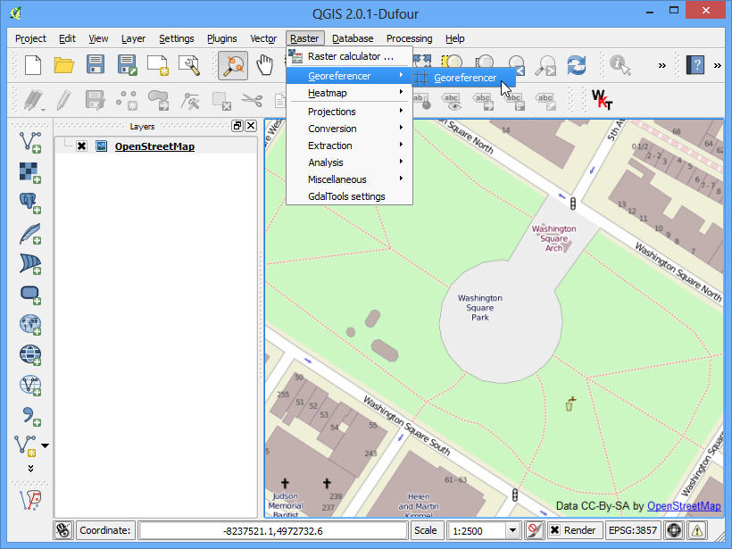

Hava Fotoğrafı Coğrafi Referanslama
Georeferencing Topo Sheets and Scanned Maps başlıklı derste coğrafi referanslamanın temel işlemlerini işlemiştik. Orada kullandığımız yöntem taranmış haritanızdan koordinatları okuyarak elle giriş yapmaktı. Ancak çoğunlukla basılı haritalar üzerinde koordinat bulamazsınız veya coğrafi referanslama yapmak istediğiniz şey bir görüntü olabilir. Bu durumda başka bir referanslanmış veriyi kaynak olarak kullanabilirsiniz. Bu derste mevcut açık verileri kullanarak nasıl coğrafi referanslama yapılacağını öğreneceksiniz.
Görev Özeti
Bu görevde balondan çekilmiş yüksek çözünürlüklü görüntüleri OpenStreetMap koordinatlarını kullanarak coğrafi referanslama yapacağız.
Öğreneceğiniz diğer beceriler
Açık kaynaklı süper yüksek çözünürlüklü görüntüleri indirme
QGIS OpenLayers eklentisini kullanma
cs2cs komut satırı aracını kullanarak farklı projeksiyonlar arasında koordinat dönüşümü yapmak
Önceden coğrafi referanslandırması yapılmış katman kullanarak Georeferencer aracına yer kontrol noktaları eklemek.
Bir katman için kendi belirlediğiniz bir veri-yok değeri atamak
Verinin Elde Edilmesi
Bu derste The Public Laboratory tarafından derlenen bazı uçurtma ve balon kaynaklı görüntüler kullanacağız. Aslında coğrafi referanslaması yapılmış görüntüler de sağlamalarına rağmen biz bunları kullanmayacağız ve aşağıdaki adımları izleyerek QGIS ile kendimiz yapacağız. Eğer sağladıkları resimleri beğendiyseniz Google Earth’te daha fazlasını bulabilirsiniz.
Washington Square Park, New York JPG görüntüsünü indirin. JPG butonunu sağ tıklayıp Bağlantıyı farklı kaydet....
Kolaylık olması açısından aşağıdaki bağlantıyı kullanarak görüntüyü indirebilirsiniz:
newyorkcity-washingtonsquarepark.jpg
İşlem Adımları
Bu derste kullanacağımız kaynak katman OpenStreetMap olacak. OpenStreetMap eklentisini . See Using Plugins adımlarını takip ederek indirin. QGIS eklentileri hakkında daha fazlası için burayı takip edin: Using Plugins

İndirme tamamlanınca adımlarını uygulayın. Böylece OpenStreetMap tarafından sağlanan katman eklenmiş olacaktır.

Artık OpenStreetMap katmanı QGIS’e eklenmiş oldu. Katmanın Koordinat Referans Sistemine (CRS) dikkat edin, EPSG 3857 Pseudo Mercator olarak ayarlanmış durumda. Bu çok önemli çünkü bu katmandan elde edeceğimiz koordinatlar bu sistemde olacak.

Şimdiki adımda coğrafi referanslama yapacağım alanı tespit etmemiz gerekiyor. Bunu yakınlaştırma ve kaydırma araçlarıyla yapabiliriz ama yeri gelmişken ileride size yardımcı olabilecek başka bir araç kullanacağız. İndirdiğimiz görüntünün New York’ta bulunan Washington Square Park’a ait olduğunu biliyoruz. Eğer wikipedia sitesinde bu parkı aratırsanız koordinatları oradan elde edebilirsiniz.

Dikkat ederseniz listelenen koordinatlar Derece/Dakika/saniye cinsinden Enlem ve Boylam değerleri. Fakat katmanımız Mercator projeksiyonunda olduğundan parkın Mercator koordinatlarına ihtiyacımız olacak. Burada cs2cs komut satırı aracı devreye giriyor. Eğer QGIS’i OSGeo4W yükleyicisi ile indirdiyseniz, araç sisteminizde zaten yüklüdür. Linux ve Mac sürümlerinde de yüklü olarak gelmekte. Bir terminal penceresi açıp cs2cs yazarak yüklü olup olmadığını kontrol edebilirsiniz. Windows kullanıcıları ile terminal penceresi açabilirler.

cs2cs aracının yüklendiğinden emin olduktan sonra enlem ve boylamlarımızı Mercator koordinatlarına dönüştürebiliriz. Aracı çalıştırmak için bir kaynak ve bir hedef CRS sağlamamız gerekiyor. CRS tanımını PROJ4 ifadesi veya EPSG kodu olarak verebiliriz. EPSG kodlarını zaten bildiğimiz için bunları kullanacağız. Aracın koordinatları X Y sırasıyla aldığını dikkate alarak ‘Boylam Enlem’ olarak giriş yapacağız. Aşağıdaki komutu terminale yazarak enter tuşuna basın. Dikkat ederseniz tırnak işaretlerini (”) ters taksim işareti ile giriş yapıyoruz. Enter tuşuna basınca aracın koordinatları işleyerek EPSG 3857 koordinat referans sisteminde X Y değerlerini ekrana getirdiğini göreceksiniz.
echo "-73d59'51\" 40d43'51\"" | cs2cs +init=EPSG:4326 +to +init=EPSG:3857
-8237364.02 4972720.34 0.00

Üretilen koordinatları kopyalayarak QGIS’e geçiş yapın. QGIS penceresinin alt kısmında Koordinatlar yazan bir metin kutusu göreceksiniz. Buraya koordinatları girip ‘Enter’ yapın. Haritanın biraz kaydığını ama yaklaşma olmadığını göreceksiniz. Parka yaklaşmak için hemen koordinatları girdiğiniz alanın hemen yanından 1:2500 ölçeğini seçip ‘Enter’ yapın.

Ve işte! Washington Square Park artık ekranınızda. Georeferencer eklentisini Raster –> Georeferencer –> Georeferencer adımlarını takip ederek başlatın. Eğer eklentiyi göremiyorsanız Georeferencer GDAL etkinleştirmesi yapmanız gerekli. Onu da buradan yapabilirsiniz .

Georeferencer penceresinden menüsüne gidin. İndirdiğiniz JPG görüntüsünğ seçip Open tıklayın.

Coordinate Reference System Selector kısmından EPSG:3857 Pseudo Mercator seçin.

Şimdi Add Point butonuna tıklayın ve görüntü üzerinde kolayca belirlenebilecek bir nokta seçin. Köşeler, kesişim noktaları, direkler, bv. iyi yersel kontrol noktaları olabilir.

Görüntü üzerinde yer kontrol noktası işaretlemek için tıkladığınızda açılan pencede sizden koordinat girmenizi isteyecek. From map canvas butonunu tıklayın.

Aynı noktayı referans katmanınızda bulun: OpenStreetMap katmanında aynı yeri tıklayın. Koordinatlar tıkladığınız yer esas alınarak otomatik olarak üretilecek. Tamam (OK) butonuna tıklayın. Benzer şekilde görüntü üzerinde en az 4 farklı yer kontrol noktası için aynı işlemi tekrarlayın.

Şimdi menüsünü seçin.

Ayarları aşağıda gösterildiği şekilde yapın. Load in QGIS when done seçeneğini işaretlemeyi unutmayın. Tamam (OK) tıklayın. Georeferencer pencerine geri dönüp seçin. Yer kontrol noktalarını kullanarak resmin ayarlanması başlayacak ve hedef raster yaratılacaktır.

İşlem bittiğinde coğrafi referanslaması tamamlanmış görüntünün QGIS’e eklendiğini göreceksiniz. Herşey yolunda gittiyse görüntünüz OpenStreetMap katmanı üzerinde tam olması gereken yerde görünecektir.

Görüntünün daha şık görünmesi için siyah beyaz veri-yok değerlerini silelim. Görüntü katmanını sağ tıklayın ve Properties seçin.

Transparency sekmesine geçiş yapın. Yapmak istediğimiz şey görüntüdeki tüm siyah ve beyaz piksellerin ‘veri-yok’ anlamına geldiğinden bunları şeffaf hale getirmek. No data value değeri olarak 0 girin. Ayrıca, Custom transparency options altından + seçerek 255 değerini de tüm bantlar için şeffaf piksel olarak girin. Percent transparent olarak 100 seçip OK yapın.

Şimdi georeferanslanmış imajınızı altlık katman üzerine görebilirsiniz.

{kind=link}